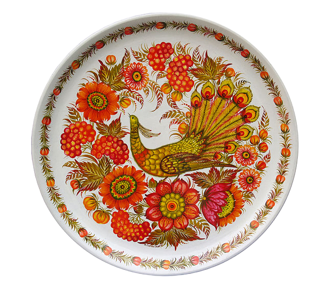
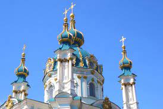
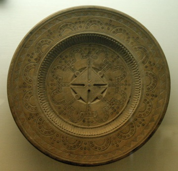
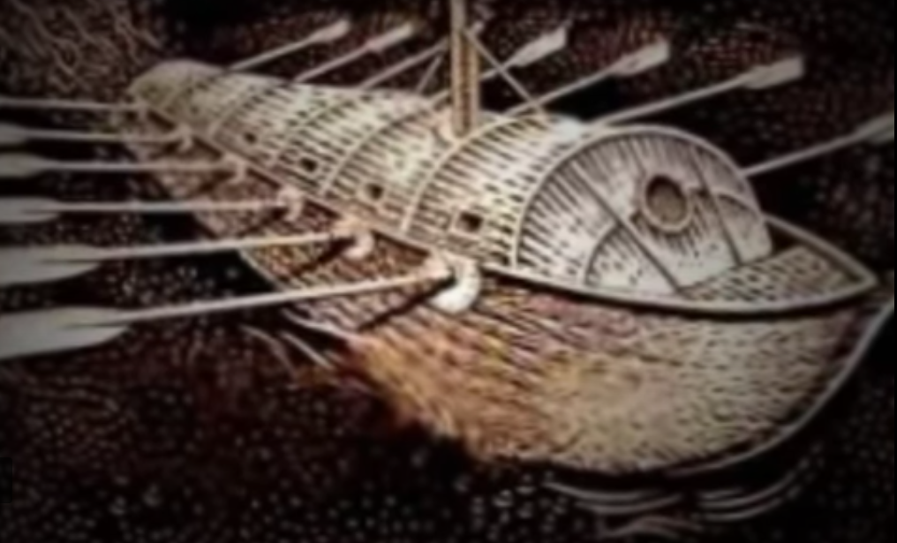

- Culture -
Ukraine is a nation with a rich and unique culture: food, dances, music, clothes, traditions, and much more. Ukrainian culture is recognized worldwide; it is influential and iconic. It is possible that something you see or hear frequently has been inspired by Ukrainian culture and you would not know, or would know it as Russian. Sadly, much of Ukraine has been spread out by Russians as Russian, especially during the Soviet Union, such as the first publication of Ukrainian folk songs being named "Russian Folk Songs" (Moscovites love Ukrainian folk music, it has something theirs doesn't: a melody based on freedom, not on following commands; look into Ukrainian folk songs in the folk songs section of our website); they have attempted to steal them and call them their own; the much beloved "Cossack Dance" has spread all around the world and been mistakenly labeled "Russian" when in reality, it is Ukrainian and an important symbol of Ukraine. You will truly enjoy your time exploring Ukrainian culture, a culture based on the desire for freedom and the difficulty of defending the truth. More than anything else, learning about Ukrainian culture will best help you understand what kind of people are Ukrainians. At the top of this page, you will see a "Topic" section with a search bar and a "Ukrainian Culture" section that will randomly select a topic for you to explore. In the topic section, you will be able to search for information about a certain part of Ukrainian culture and see what sources you can find. If you feel overwhelmed by the amount of information you can look into and don't know where to start, simply look at the "Ukrainian Culture" section to explore a randomly selected topic of Ukrainian culture.
- Culture of Ukraine
- Arkan - Hutsul Dance
- Borshch - Ukrainian Food
- Bandura - Ukrainian Instrument
- Bukovyna Folk Dances
- Bublyky - Ukrainian Food
- Bulava
- Cossack Traditions
- Cossack Mamay
- Cossack Boats
- Combat Hopak
- Chicken Kyiv - Ukrainian Food
- Duma - Ukrainian Historical Poems
- Drymba - Ukrainian Instrument
- Deruny - Ukrainian Food
- Duda - Ukrainian Instrument
- Eneїda
- Folk Instruments of Ukraine
- Hopak - Ukrainian Dance
- Hrechanyky - Ukrainian Dance
- Hutsulka - Hutsul Dance
- Holubtsi - Ukrainian Food
- Horilka - Ukrainian Beverage
- Hrechanyky - Ukrainian Food
- Havarechchyna Ceramics
- Hutsul Wood Carving
- Hutsul Carpets
- Kozachok - Ukrainian Dance
- Kolomyika - Hutsul Dance
- Kutia - Ukrainian Food
- Kvas - Ukrainian Beverage
- Kompot - Ukrainian Beverage
- Kholodets - Ukrainian Food
- Kyiv Cake - Ukrainian Food
- Korovai - Ukrainian Food
- Kobza - Ukrainian Instrument
- Kobzars
- Kobzar
- Kalyna (Viburnum)
- Lira - Ukrainian Instrument
- Metelytsia - Ukrainian Dance
- Makivnyk - Ukrainian Food
- Medivnyk - Ukrainian Food
- Motanka
- Nalysnyky - Ukrainian Food
- Orlytsia - Ukrainian Dance
- Oseledets
- Pysanky
- Povzunets - Ukrainian Dance
- Pampushky - Ukrainian Food
- Paska - Ukrainian Food
- Pyrizhky - Ukrainian Food
- Petrykivka
- Roshen - Ukrainian Confectionery
- Religious Culture
- Salo - Ukrainian Food
- Syrnyky - Ukrainian Food
- Sopilka - Ukrainian Instrument
- Surma - Ukrainian Instrument
- Trembita - Ukrainian Instrument
- Tropak - Ukrainian Dance
- Traditional Ukrainian Architecture
- Tsymbaly - Ukrainian Instrument
- Torban - Ukrainian Instrument
- Ukrainian Food
- Ukrainian Holidays
- Ukrainian Art
- Vyshyvanka - Ukraine's Clothing
- Varenyky - Ukrainian Food
- Yavoriv Toy
- Zaporozhians - Ukrainian Dance
- Zakhar Berkut
National Symbols of UkraineUkrainian flag: Blue and YellowFlower of Ukraine: SunflowerBird of Ukraine: NightingaleClothing of Ukraine: VyshyvankaAnthem: Ukraine has not perishedFood of Ukraine: Borshch/VarenykyDrink of Ukraine: Horilka/KvasEaster Symbol of Ukraine: PysankyLanguage of Ukraine: UkrainianCoat of Arms: TryzubArt of Ukraine: PetrykivkaDance of Ukraine: HopakInstrument of Ukraine: BanduraMountains of Ukraine: CarpathianUkrainian Haircut: OseledetsBerry of Ukraine: Kalyna
Arkan - Hutsul Dance
Arkan is possibly the most well-known Ukrainian Hutsul dance. Hutsuls are an ethnic Ukrainian group that live in the Carpathian mountains, they are very noticable by their outfits. The Hutsul people have contributed a lot into Ukrainian culture and have been preserving Ukrainian culture. Arkan is a beloved, exciting dance in Ukraine and around the world.

Borshch - Ukrainian Food
Borshch is considered the national dish of Ukraine which originated in Ukraine. Borshch has a long history and became popular in countries surrounding Ukraine and around the world. In 2019, New York, a russian store owner had tried to claim Borshch as russian with russian origin (this is also believed by most of russia), in their restaurant, Borshch was labeled as a russian dish. A court case was set up against the store owner by a Ukrainian. The question was, who did Borshch belong to? In the end, Borshch was proven to be Ukrainian and the russian store owner was forced to remove the false label for Borshch.
Chicken Kyiv - Ukrainian Food
Chicken Kyiv is a classic dish in Ukrainian cuisine, consisting of chicken breast or fillet, pounded until flat, filled with butter and various herbs, and coated in flour, eggs, and breadcrumbs before being cooked, either by being baked in an oven or fried in a pan.
Deruny - Ukrainian Food
Deruny - Ukrainian potato pancakes. There are many varieties of potato pancakes that come with different names. In Ukraine they are prepared from finely grated potatoes and onions, along with eggs and salt.

Eneїda
Eneїda is a parody of Virgil's Aeneid. It is the characteristically Ukrainian humour that first strikes any reader of the Eneїda, especially when compared with the austere seriousness of Virgil. Although any lover of the Aeneid will never feel completely lost given how closely Kotliarevsky follows the Virgilian narrative course, the reader is still immediately destabilized from the very first lines of the poem, when the lofty, flowing, and grandiose language of epic is abandoned in favour of a comedic mock-heroic tone.

Folk Instruments of Ukraine
Playing traditional musical instruments is a phenomenon of musical and instrumental culture of Ukrainians, which, unlike academic instrumental performance, has signs of archetypal primitive syncretic sound and structurally consists of traditional folk musical instruments on which it is performed, and traditional instrumental music.

Hopak - Ukrainian Dance
Hopak is considered the national dance of Ukraine, it is widely known all around the world. Hopak is a Ukrainian dance which originated from the Ukrainian Cossacks, it is NOT a Russian dance as it has been widespread as. Hopak has influenced lots of other dances from other nations, but the dance has originated from Ukrainians. Although you might think you know nothing about this dance, it is possible you have seen some of the moves which originated from this dance. The "Cossack Squat Kick" and other Hopak moves have influenced gym techniques around the world, have become well-known throughout shows/movies and video games, and have become popular symbols in many countries. Virsky is possibly the most famous Ukrainian dance group that dances Hopak.

Culture of Ukraine
Ukraine is a country with lots of culture: food, dance, music, clothes, art, and more. You'll definitely enjoy learning about Ukrainian culture which has been in development for thousands of years and survived oppressions. Ukrainian culture defines the Ukrainian nation and people. Ukrainian culture has become a symbol of beauty, strength, and freedom.
Kozachok - Ukrainian Dance
A folk dance for male-female pairs, which emerged among the Cossacks in the 16th century. Of Ukrainian Cossack origins, Kozachok has become popular in many countries.
Lira - Ukrainian Instrument
Lira is a folk string instrument. It was introduced in Ukraine from the West and spread rapidly during the 15th century.
Metelytsia - Ukrainian Dance
Metelytsia. A fast Ukrainian folk dance performed by many pairs of dancers formed in a circle with one couple in the center. The dance, accompanied by the folk song ‘Metelytsia’ in 2/4 time, conveys the impression of a metelytsia ‘snow flurry.’

Nalysnyky - Ukrainian Food
Nalysnyky are essentially delicate thin pancakes with a cheese filling, slathered in butter and baked until tender. Nalysnyky is also common with meat instead of a cheese filling. It is a traditional dish of the Ukrainian cuisine which Ukrainians have cooked for many years. This dish is rather versatile and can be served both as an everyday food and for special occasions.

Orlytsia - Ukrainian Dance
Orlytsia - Ukrainian Dance.
Pysanky
Pysanky is an Easter egg decorated using a wax resist method. Its name derives from the Ukrainian verb “pysaty,” meaning “to write.” The design motifs on pysanky date back to pre-Christian times–many date to early Slavic cultures, while some harken to the days of the Trypillians, my neolithic ancestors, and others to Paleolithic times.
Roshen - Ukrainian Confectionery
Ukraine's most well-known candy (chocolate/hard/soft/jelly) is produced in the Roshen confectionery. Some of Ukraine's best candy include Korivka, Romashka, and Strila. Roshen also produces some of Ukraine's most iconic and well-known cookies, cakes, etc. sold worldwide.
Salo - Ukrainian Food
Salo is one of the main symbols of Ukrainian cuisine. It is consumed raw, salted or smoked. Archaeological research shows that Ukrainians have been consuming salo since ancient times. At that time, this dish had a symbolic meaning: the boar embodied strength, courage and bravery.
Trembita - Ukrainian Instrument
Ukraine is a land of many record breaking phenomena. And one of them is trembita – a unique Carpathian wind instrument that is officially the longest in the world.

Ukrainian Food
One of the best ways to get to know a country is to taste it. The cultural code of the nation is encrypted in its food, the methods of its preparation and the dish ingredients. These aspects facilitate understanding of the cultural, mental, religious nature of people. After all, almost every dish on the table of a Ukrainian had a symbolic or ritual significance.
Vyshyvanka - Ukraine's Clothing
Vyshyvanka is a kind of traditional clothing in Ukraine. Traditionally, vyshyvanka is a hand-made blouse sewn of natural materials and embroidered with threads of various colours. Most often, the frontal part of the shirt and sleeves are embroidered.
Zaporozhians - Ukrainian Dance
Ukrainian Zaporozhian Cossack dances. Ukrainian Cossacks have contributed majorly into Ukrainian dance, some of the most well-known dance moves originates from the Zaporozhian Cossacks.
Bandura - Ukrainian Instrument
Because its development closely reflects the history of the Ukrainian nation, the bandura is more than a national musical instrument: It is the voice of Ukraine. From a musical perspective, the bandura unifies acoustic principles of both the lute and the harp. This produces a sound that is emphatic and gentle, resembling that of a harpsichord, but with a wider range of dynamics and tonal control.
Varenyky - Ukrainian Food
Varenyky (pierogies/pyrohy/dumplings) are known all over the world and Ukraine is the motherland for this wonderful dish. The national love immortalized varenyky in poems, songs, movies, and even monuments.
Povzunets - Ukrainian Dance
Povzunets goes back to the training practices of the Ukrainian kozaks (Cossacks). And not just any kozaks, but the very elite of the Ukrainian troops – the intelligence! For a scout, moving quickly and being unnoticed was sometimes a matter of life and death. That’s exactly why kozaks learnt to run/move, squatting as low as possible, so it almost looked like they were crawling (hence the name ‘povzunets’ –in Ukrainian crawl is повзати/povzaty).
Bukovyna Folk Dances
Folk dances of the Carpathian Boykos.
Hrechanyky - Ukrainian Dance
Hrechanyky - Ukrainian dance.

Tropak - Ukrainian Dance
Tropak - Ukrainian dance originating from the Ukrainian Cossacks.
Kolomyika - Hutsul Dance
Kolomyika is a well-known dance style from the Hutsuls of the Carpathian Mountains.
Hutsulka - Hutsul Dance
Hutsulka - Hutsul dance. Hutsuls are Ukrainians of the Carpathian mountains.
Holubtsi - Ukrainian Food
Holubtsi are Ukrainian stuffed cabbage rolls which are popular in all areas in Ukraine.
Pampushky - Ukrainian Food
Pampushky are one of Ukraine's favorite desserts during celebratory times, but can also be garlic bread as a side with Borshch. The most traditional Pampushky enjoyed in Ukraine during celebratory times are filled with poppy seeds or rose.
Kutia - Ukrainian Food
Kutia is a very important dish in Ukraine and has origins even before Christianity, Kutia is a sacred dish to Ukrainians. Although labeled as a Christmas dish, Kutia was never originally a Christmas dish, it was only adopted as a Christmas dish later. Kutia has symbolic value: The poppy seeds symbolize prosperity, honey stands for a sweet life after death, wheat berries are the symbol of life after resurrection.
Kvas - Ukrainian Beverage
Kvas is a very popular and beloved drink among Ukrainians. Today there are a lot of factory-made versions, however, homemade kvas is always the best. Kvas is believed to have originated from Kyivan Rus' among the Rusyny (East Slavic) people.
Horilka - Ukrainian Beverage
Horilka is considered one of Ukraine's national drinks originating from Ukraine. Horilka is an alcholic beverage which was especially beloved by the Ukrainian Cossacks.
Paska - Ukrainian Food
Paska is a Ukrainian bread which is today widely known as Easter bread, however, its origins go back even before Christianity. In pre-Christian times, paska was baked as an offering to the Pagan gods. It has since been adopted into Christianity. Paska is a very important symbol to Ukrainians today.
Syrnyky - Ukrainian Food
One of the most popular Ukrainian breakfast dishes is syrnyky. These are sweet cheese pancakes usually served with jam, sauce, or syrup.
Kompot - Ukrainian Beverage
This classic sweet fruit drink is easy to make and perfect on those hot summer days. Ukrainian kompot can use a variety of fruits. Kompot is enjoyed in many countries in Eastern Europe.
Pyrizhky - Ukrainian Food
Pyrizhky are fluffy and soft pastries with a savory filling baked or fried until golden and crisp. Ukrainians cook them all year round with different sweet and salty fillings, depending on what food, veggies, and fruits are in season.
Kholodets - Ukrainian Food
Do you want to try something authentic? Then try kholodets, a traditional Slavic treat, loved by many Ukrainians and served at family gatherings. This cold snack represents a broth cooked using meat which is then refrigerated until jellified.
Hrechanyky - Ukrainian Food
Hrechanyky is a traditional dish of Ukrainian cuisine, especially popular in the Lemko region.
Bublyky - Ukrainian Food
Bublyky - a traditional dish of Ukrainian cuisine, which can be cooked from choux pastry or yeast dough. This product can be salty or sweet, lean or with poppy seeds, etc.
Kyiv Cake - Ukrainian Food
The sweet symbol of the Ukrainian capital and one of the most famous national desserts. The original recipe of the Kyiv cake is still known only to confectioners of the Roshen factory (Ukrainian confectionery).
Korovai - Ukrainian Food
Wedding korovai is not only delicious pastry, initially it symbolized the unity of two loving hearts. Round shape of this treat was associated with the Sun which was worshiped by the Slavs. Bread was the symbol of wealth and virility. It was believed that Sun god would protect the new family if it was presented by this kind of bread. Korovai was treated like something sacred.
Makivnyk - Ukrainian Food
Makivnyk - Ukrainian poppy seed roll. Poppy seeds are widely used in Ukraine and are a favorite taste. Poppy seed filling in ancient times was made only for special occasions and symbolized in the Ukrainian Slavic ideology the stars in the sky and plurality of the worlds. Poppy seeds in Ukrainian is "Mak".
Medivnyk - Ukrainian Food
The Classic Honey Cake or Medivnyk is an authentic Ukrainian cake, considered to be one of the most popular desserts in Slavic countries. According to the classic recipes, the honey cake is made with several layers. It takes a little to bake, but the whole process might take some patience.

Kobza - Ukrainian Instrument
Kobza - an ancient string instrument of the lute family. Of eastern origin, it was known in Ukraine as early as the 11th century, but became popular only in the 16th century, when it was used to accompany the recitation of dumas by the kobzars.

Kobzars
Ukrainian folk bards who performed a large repertoire of epic-historical, religious, and folk songs while playing a kobza or bandura. Kobzars first emerged in Kyivan Rus’. Kobzars lived at the Zaporozhian Sich and were esteemed by the Ukrainian Cossacks, whom they frequently accompanied on various campaigns against the Turks, Tatars, and Poles. The epic songs they performed served to raise the morale of the Cossack army in times of war. Many Cossacks were Kobzars themselves.
Traditional Ukrainian Architecture
Links provided give examples of the traditional architecture of Ukraine. Ukrainian Cossacks and families during the time of the Cossacks lived in houses called Pryzba. Pryzba is a beautiful Ukrainian home most common during Cossack times. Some of Ukraine's oldest standing structures are from the times of Kyivan Rus' such as the Saint-Sophia Cathedral. Western Ukraine such as the city of Lviv and Hutsul regions also have unique styles of architecture.
Sopilka - Ukrainian Instrument
Sopilka is a wind folk musical instrument of varied construction made of wood or bark. Generally cylindrical, blocked at one end, and with 6 to 8 finger holes. The earliest-known example found in Ukraine is a mammoth-bone flute from the Paleolithic Period. The flute is known from the Princely era of the Kyivan Rus’ and is depicted on an 11th-century fresco in Kyiv’s Saint Sophia Cathedral.
Tsymbaly - Ukrainian Instrument
Tsymbaly is a Ukrainian folk musical instrument whose strings are struck with two small padded sticks. During the 1600s the tsymbaly became widespread throughout Ukraine. Today it remains one of the basic instruments of all folk orchestras.
Surma - Ukrainian Instrument
wind instrument made of wood. Generally conical with a flaring bell, double-reed mouthpiece, and five to seven finger holes, this oboe-type instrument has a long history, stretching back to Sumer and ancient Egypt. The surma in Ukraine is known from the Princely era of the Kyivan Rus’ state. Surma is recognized as a symbol of the Zaporozhian Cossacks since the instrument was widely used among the Cossacks.
Torban - Ukrainian Instrument
Torban is a musical string instrument that is plucked. The Ukrainian torban is closely related to the shorter-necked Paduan theorbo, but differs from the Western European instrument in that it has three sets of courses instead of two. During the 17th century the torban was the instrument of the Ukrainian nobility. It spread into Poland and Muscovy but remained in use until the end of the 19th century only in Ukraine.
Duda - Ukrainian Instrument
Duda is a folk musical instrument that has been played in Ukraine since the 16th century. Duda is especially popular among the Hutsuls in Ukraine.

Petrykivka
Petrykivka painting is the Ukrainian arts and crafts patterned folk style that originated from the village of Petrykivka, Ukraine, and takes its name from this village. Petrykivka is unique to Ukraine, but has influenced the art of neighboring countries. The art of Petrykivka remains an important symbol to Ukrainians and are displayed in many Ukrainian homes.

Cossack Mamay
Cossack Mamay (also Kozak-Mamai) is the most popular figure in Ukrainian folk paintings of the 17th–20th centuries. Kozak-Mamay came to represent the generalized, popular image of the Ukrainian Cossacks, particularly after the destruction of the Zaporozhian Sich and the Russian conquest of most of Ukraine. He also became a theme in literature, drama, and fine art. Cossack Mamay is an inspirational figure who symbolizes Ukrainian Cossack freedom and bravery.
Oseledets
Oseledets is a Ukrainian haircut most commonly associated with the Cossacks of Zaporizhzhia.
Drymba - Ukrainian Instrument
Drymba is a plucked folk musical instrument that was popular among the common people in Ukraine.
Ukrainian Holidays
Learn more about the holidays of Ukraine.
Havarechchyna Ceramics
Havarechchyna is a city in Ukraine which is famous for its unique black ceramics. Havarechchyna is a village in the Zolochiv District of the Lviv Region (Ukraine). The population is 76 people (as of 2006).

Religious Culture
This section will provide links about the culture and traditions of Ukrainian beliefs and religions.

Duma - Ukrainian Historical Poems
Ukrainian lyrico-epic works of folk origin mainly during the events in the Cossack period of the 16th–17th century.
Combat Hopak
Ukrainian martial arts originating from the Cossacks of Ukraine and modernized by Volodymyr Pylat.
Bulava
The bulava was known among Eastern peoples and came into widespread use in Ukraine in the 13th century, first as a weapon and then as a symbol of authority. In the 16th–18th century Cossack officers bestowed the bulava on the elected hetman.
Kalyna (Viburnum)
Kalyna is a symbol of Ukraine. It was used in different traditional events starting the birth till the last days of a person. Mentions of the Kalyna can be often found throughout the Ukrainian folklore, especially in songs. Also it's often depicted on the Ukrainian embroidery: towels and shirts.
Zakhar Berkut
Zakhar Berkut is the name of a book and character by Ivan Franko. Zakhar Berkut is well-known in Ukraine.

Kobzar
Originally the title of the first collection of poems by Taras Shevchenko, consisting of eight poems, mainly Romantic ballads, published by P. Martos in Saint Petersburg in 1840. The title has, with time, been applied to Shevchenko's poetic works in general. It has acquired a meaning symbolic of the Ukrainian literary and national rebirth.
Ukrainian Art
Links are provided showing Ukrainian art and the history of Ukrainian art.

Cossack Traditions
Learn about Ukrainian Cossacks by learning about their culture and traditions.
Motanka
Motankas (Мотанка) are ancient Ukrainian family talismans. They are the symbol of prosperity, goodness and hope. Then first knotted dolls appeared about 5,000 years ago, and represented the unity of the family and deep connection between multiple generations.

Hutsul Wood Carving
The best traditions of folk art of the past have been most fully preserved and have reached our days in the artistic processing of wood in the Hutsul region. Yes, some ancient motifs of flat carving on wood, which were widespread throughout Ukraine, have hardly changed.

Hutsul Carpets
Motankas (Мотанка) are ancient Ukrainian family talismans. They are the symbol of prosperity, goodness and hope. Then first knotted dolls appeared about 5,000 years ago, and represented the unity of the family and deep connection between multiple generations.

Cossack Boats
Shipbuilding among the Ukrainian Cossacks developed long ago and reached a high level of skill and perfection. Cossack shipwrights were also famous outside of Ukraine. Cossack activity on the Black and Azov seas gained international publicity.
Yavoriv Toy
The tradition of giving children wooden toys goes back to ancient times. In the long autumn and winter evenings, grandfathers and fathers carved wooden toys for their children. Special toys were created in Yavoriv region (Lviv region). Figures of grasshoppers and birds, carts, toy furniture (tables, chairs, chests), children's musical instruments (violins, pipes, whistles) were carved from aspen wood.